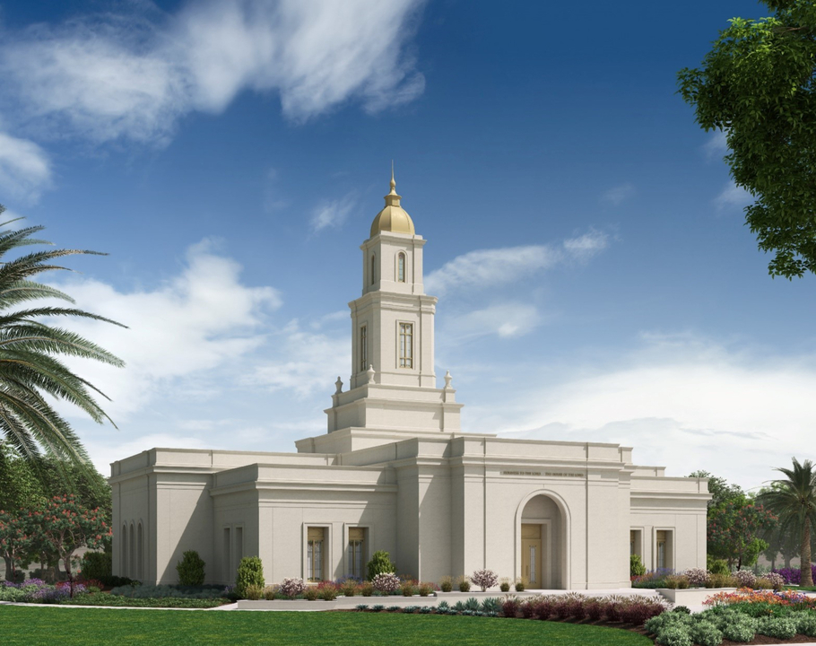
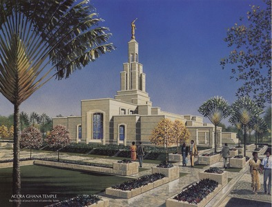

Temple Album
☰
Home
Old
New
Large
Small
Africa Temple Collection

Salt Lake Temple
Durban Temple
Sierra Leone Temple
south africa temple
Durban Temple
Aba Nigeria Temple
Johannesburg south africa temple
Cape Town Temple

Accra Ghana Temple